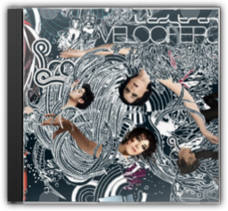
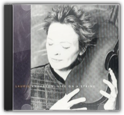

Kylie Minogue
Kylie Minogue
Kylie Minogue
Kylie Minogue


The original title of this album was to be The Impossible Princess, before the death of Princess Diana necessitated a change of plan. The most experimental Kylie album to date features collaborations with the Manic Street Preachers (on the Motown-esque "Some Kind of Bliss" and the loungecore "I Don't Need Anyone"), as well as Dave Ball of the Grid (and Soft Cell), Rob Dougan of Clubbed To Death and, once again, Brothers In Rhythm. The album flits effortlessly between various genres: from Indian-mantra style on the opening "Too Far", to a weird combination of Irish and eastern influence on "Cowboy Style", to trip-hop on "Jump;" it also finds Kylie doing the indie-chick thing on the Manics tracks, snarling Republica-like on "Limbo", and expanding her vocal range with Bjork influenced vocals, particularly on "Say Hey." This is the first time we hear Kylie get angry, sneer and, in fact, seem anything other than sorted, which is kind of odd—but fans of the Jewel/Alanis school of soul-baring female singer-songwriters may be surprised by how honest the whole thing sounds. —Ronita Dutta

Velocifero
Ladytron
Four albums in, and it's quite clear that Liverpool's Ladytron are not susceptible to the dancefloor's flightier urges. Like its predecessors, Velocifero is electro-pop to the core, a sparking circuit of cold emotions and enveloping synths that despite its remove — or perhaps because of it — feels the perfect vehicle for some genuinely affecting pop songs. Boasting additional production work from Nine Inch Nails' Alessandro Cortini and Vicarious Bliss of notorious Parisian imprint Ed Banger, there is a certain robust quality of sound here: "Black Cat", sung by Mira Aroyo in her native Bulgarian, commences with booming drums and big black smears of synthesiser. But there are signs of a certain playfulness, too. "Ghosts" rides a lolloping glam beat that positions it in the area of Goldfrapp's Black Cherry, Helena Marnie's cool, mysterious vocal recalling Stereolab's Laetitia Sadler in its veiled promise: "There's a ghost in me/who wants to say I'm sorry/Doesn't mean I'm sorry". The Aroyo-sung "Kletva", meanwhile, is a cover of the theme from an old Bulgarian children's TV program, performed with an uncharacteristic jaunt that, while relatively alien to Ladytron, actually works rather nicely.—Louis Pattison

Life on a String
Laurie Anderson
Life on a String, Laurie Anderson's meld of Biblical references, New York wanderings, world rhythms and chamber music doesn't cohere like it should. Caught between bemusement and empathy, Anderson's knack for nailing oddball details can lift her work beyond mere wit, but not here. On "Dark Angel" she damns consumerism with lines that would've been laughable even as the outset of her career in the 1970s: "Look at all the things I bought... I'm feeling kind of lost." Her quoting "I'm a Little Teapot" on "One Beautiful Evening" sounds like self-parody, or the result of a lost dare with another artsy type. For true Anderson wigginess and smarts, try Ugly One With The Jewels, or for that matter, her classic debut Big Science. —Rickey Wright  Playing My Game
Lene
Marlin
Playing My Game
Lene
Marlin
When Lene Marlin stepped up onto the podium at the 1999 MTV European Music Awards to collect the award for best Scandinavian artist, anyone outside of the icy hinterlands could have been forgiven for thinking, "But that's not the woman out of the Cardigans..." Five months later and Lene Marlin's single "Sitting Down Here" was a big hit throughout Europe and now everyone knows her name, even if they can't pronounce it (it's "Le-nay", by the way). Her debut album Playing My Gamefittingly opens with the hit single, which sets the tone for the rest of the album—deceptively sweet melodies topped with bittersweet lyrics of lost loves and youthful alienation. Musically it is hardly challenging, combining the angst of the likes of Fiona Apple with the gentle harmonious vocals of the Corrs. It does beg the question what young, successful, attractive women like Lene and Fiona have to complain about, but if it leads to pretty, folk-tinged pop like this, who's complaining? —Helen Marquis  On How Life Is
Macy Gray
On How Life Is
Macy Gray
Macy Gray's debut is the kind of album that lends itself to comparisons: Bill Withers (he of "Lovely Day" fame), for the rapturous, laid-back funk vibe; Lauryn Hill, as a fellow nouveau-soul-diva who's not willing to let something as silly as genre-lines let her stop from appropriating a great sound; Liz Phair, from her Exile in Guyvilledays, for the stark, honest, everyday take on relationship politics; Lenny Kravitz, for pure iconoclastic self-confidence; and, yes, Billie Holiday for the sheer sound of her voice (youngish, raw, slightly otherworldly, but strangely powerful). One album into her career, it's unfair to ask Lady Gray to live up to most of the above—no matter what the diva in question might have to say about it—so accept On How Life Ison its own terms. Eminently danceable and groovy without a single clunker and though some songs ("Why Didn't You Call Me", "I've Committed Murder" and "Do Something", on which Gray sings "..and I'm the latest craze") are more equal than others, the album is well worth its share of hype. —Randy Silver |


 Made with Delicious Library
Made with Delicious Library
Springfield, State zipflap congrotus delicious library Clancy, Liam